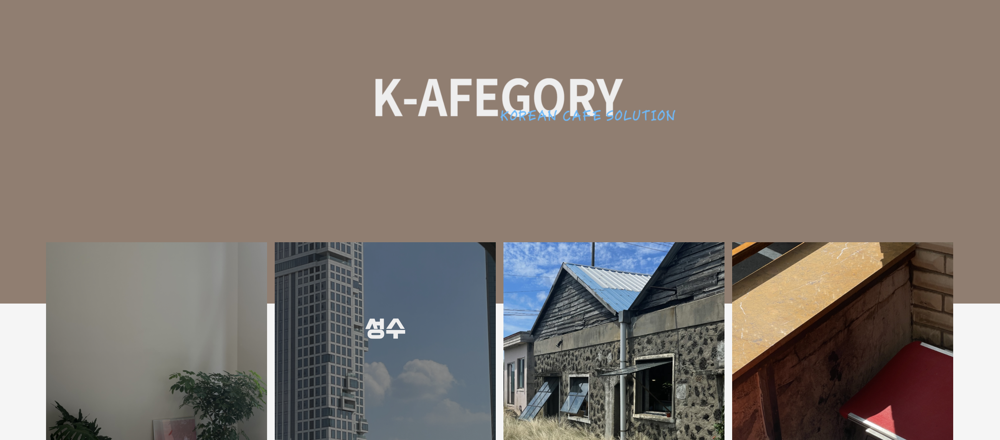
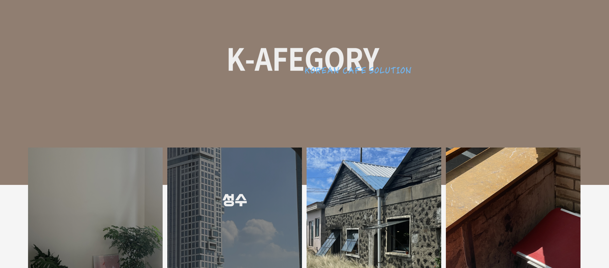

Example
K-afegory
Building Idea
We focused on the problems people face when they go to cafes for a purpose. This idea was derived to solve the problem of not being able to choose which cafe to go to. We applied the sentiment dictionary analyzed based on the Naver blog to the category of ‘Korean Cafe’.
Web service description
We filter the cafe data using the categories we set according to the purpose and location of the client.
Within the cafe category narrowed according to client needs, we start by introducing cafes in the nearest range.
By using the sentiment dictionary created based on web crawling data of Naver blog review articles, we provide client with the information they want and the cafe’s emotional index information.
Prototype
Then, let’s look at the structure of our ‘K-afegory’ web service.’
 



Expectation
By directly using our ‘K-afegory’ web service, users can reduce the time and effort it takes to select a cafe, and the web service can also act as a cafe recommendation system.
Furthermore, by allowing only those who have chosen a cafe to leave a review through the web service, it is possible to create additional data, and by using this, the review system will become more sophisticated.